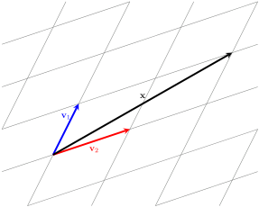
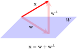

In this section, we examine what it means for vectors (and sets of vectors) to be orthogonal and orthonormal. Recall that two non-zero vectors are orthogonal if their dot product is zero. A collection of non-zero vectors in \(\R^n\) is called orthogonal if the vectors are pair-wise orthogonal.
The diagram below shows two orthogonal vectors in \(\R^2\) and three orthogonal vectors in \(\R^3\text{.}\)
If every vector in an orthogonal set of vectors is also a unit vector, then we say that the given set of vectors is orthonormal.
Formally, we can define orthogonal and orthonormal vectors as follows.
Definition7.2.1.
Let \(\{ \mathbf{v}_1, \mathbf{v}_2, \cdots, \mathbf{v}_k \}\) be a set of nonzero vectors in \(\R^n\text{.}\) Then this set is called an orthogonal set if \(\mathbf{v}_i \cdot \mathbf{v}_j = 0\) for all \(i \neq j\text{.}\) Moreover, if \(\norm{\mathbf{v}_i}=1\) for \(i=1,\ldots,m\) (i.e. each vector in the set is a unit vector), we say the set of vectors is an orthonormal set.
An orthogonal set of vectors may not be orthonormal. To convert an orthogonal set to an orthonormal set, we need to divide each vector by its own length.
Definition7.2.2.
Normalizing an orthogonal set is the process of turning an orthogonal set into an orthonormal set. If \(\{ \mathbf{v}_1, \mathbf{v}_2, \ldots, \mathbf{v}_k\}\) is an orthogonal subset of \(\R^n\text{,}\) then
Show that \(\{\mathbf{v}_1,\mathbf{v}_2\}\) is an orthogonal set of vectors but not an orthonormal one. Find the corresponding orthonormal set.
Answer.
One easily verifies that \(\mathbf{v}_1 \cdot \mathbf{v}_2 = 0\) and \(\left\{ \mathbf{v}_1, \mathbf{v}_2 \right\}\) is an orthogonal set of vectors. On the other hand one can compute that \({\norm{\mathbf{v}_1}}= {\norm{\mathbf{v}_2}} =
\sqrt{2} \neq 1\) and so the set is not orthonormal. To find a corresponding orthonormal set, we need to normalize each vector.
Recall that every basis of \(\R^n\) (or a subspace \(W\) of \(\R^n\)) imposes a coordinate system on \(\R^n\) (or \(W\)) that can be used to express any vector of \(\R^n\) (or \(W\)) as a linear combination of the elements of the basis. For example, vectors \(\mathbf{v}_1\) and \(\mathbf{v}_2\) impose a coordinate system onto the plane, as shown in the figure below. We readily see that \(\mathbf{x}\text{,}\) contained in the plane, can be written as \(\mathbf{x}=\mathbf{v}_1+2\mathbf{v}_2\text{.}\)

Vector \(\mathbf{x}\) is visually easy to work with. In general, one way to express an arbitrary vector as a linear combination of the basis vectors is to solve a system of linear equations, which can be costly. One reason we like \(\{\mathbf{i},\mathbf{j}\}\) as a basis of \(\R^2\) is because any vector \(\mathbf{x}\) of \(\R^2\) can be easily expressed as the sum of the orthogonal projections of \(\mathbf{x}\) onto the basis vectors \(\mathbf{i}\) and \(\mathbf{j}\text{,}\) as shown below.
We can see why an ``upright" coordinate system with basis \(\{\mathbf{i},\mathbf{j}\}\) works well. What if we tilt this coordinate system while preserving the orthogonal relationship between the basis vectors?
The following exploration allows you to investigate the consequences.
Exploration7.2.1.
In the following GeoGebra interactive, vectors \(\mathbf{v}_1\) and \(\mathbf{v}_2\) are orthogonal (slopes of the lines containing them are negative reciprocals of each other). These vectors are clearly linearly independent and span \(\R^2\text{.}\) Therefore \(\{\mathbf{v}_1,\mathbf{v}_2\}\) is a basis of \(\R^2\text{.}\) Let \(\mathbf{x}\) be an arbitrary vector. Orthogonal projections of \(\mathbf{x}\) onto \(\mathbf{v}_1\) and \(\mathbf{v}_2\) are depicted in light grey.
Use the tip of vector \(\mathbf{x}\) to manipulate the vector and convince yourself that \(\mathbf{x}\) is always the diagonal of the parallelogram (a rectangle!) determined by the projections.
Use the tips of \(\mathbf{v}_1\) and \(\mathbf{v}_2\) to change the basis vectors. What happens when \(\mathbf{v}_1\) and \(\mathbf{v}_2\) are no longer orthogonal?
Pick another pair of orthogonal vectors \(\mathbf{v}_1\) and \(\mathbf{v}_2\text{.}\) Verify that \(\mathbf{x}\) is the sum of its projections.
Figure7.2.4.
As you have just discovered in Exploration 7.2.1, we can express an arbitrary vector of \(\R^2\) as the sum of its projections onto the basis vectors, provided that the basis is orthogonal. It turns out that this result holds for any subspace of \(\R^n\text{,}\) making a basis consisting of orthogonal vectors especially useful.
If an orthogonal set is a basis, we call it an orthogonal basis. Similarly, if an orthonormal set is a basis, we call it an orthonormal basis.
The following theorem generalizes our observation in Exploration 7.2.1. As you read the statement of the theorem, it will be helpful to recall that the orthogonal projection of vector \(\mathbf{x}\) onto a non-zero vector \(\mathbf{d}\) is given by
Let \(W\) be a subspace of \(\R^n\) and suppose \(\{ \mathbf{f}_1, \mathbf{f}_2, \ldots, \mathbf{f}_m \}\) is an orthogonal basis of \(W\text{.}\) Then for every \(\mathbf{x}\) in \(W\text{,}\)
We claim that \(c_i = \frac{\mathbf{x}\cdot \mathbf{f}_i}{\norm{\mathbf{f}_i}^2}\) for \(i=1,\ldots,m\text{.}\) To see this, we take the dot product of each side with the vector \(\mathbf{f}_i\) and obtain the following.
Our basis is orthogonal, so \(\mathbf{f}_j \cdot \mathbf{f}_i = 0\) for all \(j \neq i\text{,}\) which means after we distribute the dot product, only one term will remain on the right-hand side. We have
We now divide both sides by \(\mathbf{f}_i \cdot \mathbf{f}_i = \norm{\mathbf{f}_i}^2\text{,}\) and since our claim holds for \(i=1,\ldots,m\text{,}\) the proof is complete.
In Theorem 7.2.5 shows one important benefit of a basis being orthogonal. With an orthogonal basis it is easy to represent any vector in terms of the basis vectors. The example below exemplifies these new ideas.
Notice that \(\mathcal{B}=\{ \mathbf{f}_1, \mathbf{f}_2, \mathbf{f}_3\}\) is an orthogonal set of vectors, and \(\mathcal{B}\) spans \(\R^3\text{.}\) Use this fact to write \(\mathbf{x}\) as a linear combination of the vectors of \(\mathcal{B}\text{.}\)
Answer.
We first observe that \(\mathcal{B}\) is a linearly independent set of vectors, and so \(\mathcal{B}\) is a basis for \(\R^3\text{.}\) Next we apply Theorem~Theorem 7.2.5 to express \(\mathbf{x}\) as a linear combination of the vectors of \(\mathcal{B}\text{.}\) We wish to write:
The formula from Theorem 7.2.5 is easy to use, and it becomes even easier when our basis is orthonormal.
Corollary7.2.7.
Let \(W\) be a subspace of \(\R^n\) and suppose \(\{ \mathbf{q}_1, \mathbf{q}_2, \ldots, \mathbf{q}_m \}\) is an orthonormal basis of \(W\text{.}\) Then for any \(\mathbf{x}\) in \(W\text{,}\)
This is a special case of Theorem 7.2.5. Because \(\norm{\mathbf{u_i}} = 1\) for \(i=1,\ldots,m\text{,}\) %where we can compute the coefficients of \(x\) with respect to the basis by simply taking the dot product with each basis vector, for in this case the terms are given by
Subsection7.2.3Orthogonal Projection onto a Subspace
In the previous section we found that given a subspace \(W\) of \(\R^n\) with an orthogonal basis \(\mathcal{B}\text{,}\) every vector \(\mathbf{x}\) in \(W\) can be expressed as the sum of the orthogonal projections of \(\mathbf{x}\) onto the elements of \(\mathcal{B}\text{.}\) We wish to emphasize that our premise is \(\mathbf{x}\) Being in \(W\text{.}\)
In this section, we look into the meaning of the sum of orthogonal projections of \(\mathbf{x}\) onto the elements of an orthogonal basis of \(W\) for those vectors \(\mathbf{x}\) of \(\R^n\) that are not in \(W\text{.}\)
Exploration7.2.2.
In the interactive below, \(W\) is a plane spanned by \(\mathbf{v}_1\) and \(\mathbf{v}_2\text{,}\) in \(\R^3\text{.}\)\(W\) is subspace of \(\R^3\text{.}\) In the initial set up, \(\mathbf{v}_1\) and \(\mathbf{v}_2\) are orthogonal. Vector \(\mathbf{x}\) is not in \(W\text{.}\) Use check-boxes to construct the sum of orthogonal projections of \(\mathbf{x}\) onto \(\mathbf{v}_1\) and \(\mathbf{v}_2\text{.}\) RIGHT-CLICK and DRAG to rotate the image.
Figure7.2.8.
If moved, return the basis vectors \(\mathbf{v}_1\) and \(\mathbf{v}_2\) to their default position (set \(s_1=s_2=0\)) to ensure that they are orthogonal.
Problem7.2.9.
Rotate the image to convince yourself that the perpendiculars dropped from the tip of \(\mathbf{x}\) to \(\mathbf{v}_1\) and \(\mathbf{v}_2\) are indeed perpendicular to \(\mathbf{v}_1\) and \(\mathbf{v}_2\) in the diagram (you’ll have to look at it just right to convince yourself of this). Are both of these perpendiculars also necessarily perpendicular to the plane?
Answer.
No.
Problem7.2.10.
Use sliders \(x_1, x_2\) and \(x_3\) to manipulate \(\mathbf{x}\text{.}\) Rotate the figure for a better view. What is true about about vector \(\mathbf{p}\text{?}\)
Vector \(\mathbf{p}\) is orthogonal to \(W\text{.}\)
All of the above.
Answer.
Option (3): "All of the above."
Rotate the figure so that you’re looking directly down at the plane. If you’re looking at it correctly, you will notice that (1) the parallelogram determined by the projections of \(\mathbf{x}\) onto \(\mathbf{v}_1\) and \(\mathbf{v}_2\) is a rectangle; (2) the sum of projections, \(\mbox{proj}_{\mathbf{v}_1}\mathbf{x}+\mbox{proj}_{\mathbf{v}_2}\mathbf{x}\text{,}\) is located directly underneath \(\mathbf{x}\text{,}\) like a shadow at midday.
Problem7.2.11.
Use sliders \(s_1\) and \(s_2\) to manipulate the basis vectors \(\mathbf{v}_1\) and \(\mathbf{v}_2\) so that they are no longer orthogonal. Rotate the figure for a better view. Which of the following is true?
Rotate your figure so that you’re looking directly down at the plane. Which of the following is true?
Parallelogram determined by \(\mathbf{v}_1\) and \(\mathbf{v}_2\) is a rectangle.
\(\mbox{proj}_{\mathbf{v}_1}\mathbf{x}+\mbox{proj}_{\mathbf{v}_2}\mathbf{x}\) is located directly underneath \(\mathbf{x}\text{.}\)
None of the above.
Answer.
Option (3): None of the above.
In Exploration 7.2.2, you discovered that given a plane, spanned by orthogonal vectors \(\mathbf{v}_1,\mathbf{v}_2\text{,}\) in \(\R^3\text{,}\) and a vector \(\mathbf{x}\text{,}\) not in the plane, we can interpret the sum of orthogonal projections of \(\mathbf{x}\) onto \(\mathbf{v}_1\) and \(\mathbf{v}_2\) as a ``shadow" of \(\mathbf{x}\) that lies in the plane directly underneath the vector \(\mathbf{x}\text{.}\) We say that this ``shadow" is an orthogonal projection of \(\mathbf{x}\) onto \(W\text{.}\)
You have also found that if \(\mathbf{v}_1,\mathbf{v}_2\) are not orthogonal, the parallelogram representing the sum of the orthogonal projections of \(\mathbf{x}\) onto \(\mathbf{v}_1\) and \(\mathbf{v}_2\) will not be a rectangle. In this case, \(\mathbf{x}\) minus this sum will NOT be orthogonal to the plane. It is essential that \(\mathbf{v}_1,\mathbf{v}_2\) are orthogonal for \(\mbox{proj}_{\mathbf{v}_1}\mathbf{x}+\mbox{proj}_{\mathbf{v}_2}\mathbf{x}\) to be considered an orthogonal projection.
In general, we can define an orthogonal projection of \(\mathbf{x}\) in \(\R^n\) onto a subspace \(W\) of \(\R^n\) as the sum of the orthogonal projections of \(\mathbf{x}\) onto the elements of an orthogonal basis of \(W\text{.}\) A pivotal aspect of this definition is that it allows us to express \(\mathbf{x}\) as the sum of its orthogonal projection, \(\mathbf{w}\text{,}\) onto \(W\) and a vector orthogonal to \(\mathbf{w}\text{,}\) called \(\mathbf{w}^\perp\text{.}\)Definition 7.2.13 and the subsequent diagram summarize this discussion.
Definition7.2.13.Projection onto a Subspace of \(\R^n\).
Suppose \(W\) is a subspace of \(\R^n\) with orthogonal basis \(\{\mathbf{f}_{1}, \mathbf{f}_{2}, \dots, \mathbf{f}_{m}\}\text{.}\) If \(\mathbf{x}\) is in \(\R^n\text{,}\) the vector
Subsection7.2.4Orthogonal Decomposition of \(\mathbf{x}\)
From before, Definition 7.2.13 allows us to express \(\mathbf{x}\) as the sum of its orthogonal projection, \(\mathbf{w}=\mbox{proj}_W\mathbf{x}\text{,}\) located in \(W\text{,}\) and a vector we will call \(\mathbf{w}^\perp\) (pronounced ``W-perp"), given by \(\mathbf{w}^\perp=\mathbf{x}-\mathbf{w}\text{.}\) This decomposition of \(\mathbf{x}\) is shown in the diagram below.

You have already met \(\mathbf{w}^\perp\text{,}\) under the name of \(\mathbf{p}\) in Exploration 7.2.2, and observed that this vector is orthogonal to \(W\text{.}\) We will now prove that \(\mathbf{w}^\perp\) is orthogonal to every vector in \(W\text{.}\) This will be accomplished in two steps. First, in Theorem 7.2.15 we will prove that \(\mathbf{w}^\perp\) is orthogonal to all of the basis elements of \(W\text{.}\) Next, you will use this result to demonstrate that \(\mathbf{w}^\perp\) is orthogonal to every vector in \(W\text{.}\)
Theorem7.2.15.
Let \(W\) be a subspace of \(\R^n\) with orthogonal basis \(\{\mathbf{f}_{1}, \mathbf{f}_{2}, \dots, \mathbf{f}_{m}\}\text{.}\) Let \(\mathbf{x}\) be in \(\R^n\text{,}\) and define \(\mathbf{w}^\perp\) as
Then \(\mathbf{w}^\perp\) is orthogonal to \(\mathbf{f}_i\) for \(1\leq i\leq m\text{.}\)
Proof.
We will use Formula 7.2.14 to show that \(\mathbf{w}^\perp\cdot \mathbf{f}_i\)=0. Recall that \(\{\mathbf{f}_{1}, \mathbf{f}_{2}, \dots, \mathbf{f}_{m}\}\) is an orthogonal basis. Therefore \(\mathbf{f}_j\cdot\mathbf{f}_i=0\) for \(i\neq j\text{.}\) This observation enables us to compute as follows.
We leave the proof of the following Corollary as Exercise 7.2.5.6.
Corollary7.2.16.
Let \(W\) be a subspace of \(\R^n\) with orthogonal basis \(\{\mathbf{f}_{1}, \mathbf{f}_{2}, \dots, \mathbf{f}_{m}\}\text{.}\) Let \(\mathbf{x}\) be in \(\R^n\text{,}\) and define \(\mathbf{w}^\perp\) as
Then \(\mathbf{w}^\perp\) is orthogonal to every vector in \(W\text{.}\)
The fact that the decomposition of \(\mathbf{x}\) into the sum of \(\mathbf{w}\) and \(\mathbf{w}^\perp\) is unique is the subject of the Orthogonal Decomposition Theorem which we will prove later on. Throughout this section we have worked with orthogonal bases of subspaces. Does every subspace of \(\R^n\) have an orthogonal basis? If so, how do we find one? These questions will be addressed in subsuming sections.
Exercises7.2.5Exercises
1.
Retry Example 7.2.6 using Gaussian elimination. Which method seems easier to you?
2.
Let \(\mathbf{x}_1, \mathbf{x}_2, \ldots, \mathbf{x}_k\in\R^n\) and suppose
Furthermore, suppose that there exists a vector \(\mathbf{v}\in\R^n\) for which \(\mathbf{v}\cdot \mathbf{x}_j=0\) for all \(j\text{,}\)\(1\leq j\leq k\text{.}\) Show that \(\mathbf{v}=\mathbf{0}\text{.}\)
Show that \(\left\{\begin{bmatrix}1\\ 0\\ 2\\ -3\end{bmatrix}, \begin{bmatrix}4\\ 7\\ 1\\ 2\end{bmatrix}\right\}\) is another orthogonal basis of \(W\text{.}\)
5.
Use the basis in Exercise 7.2.5.4 to compute \(\mbox{proj}_W(\mathbf{x})\text{.}\)